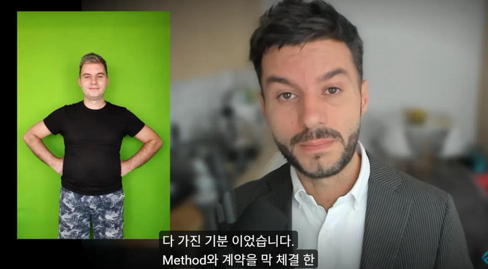
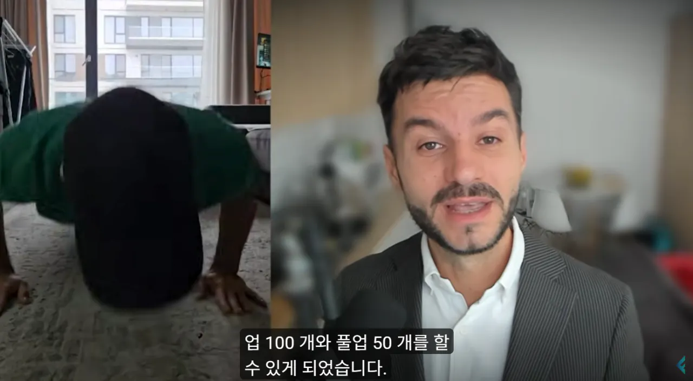
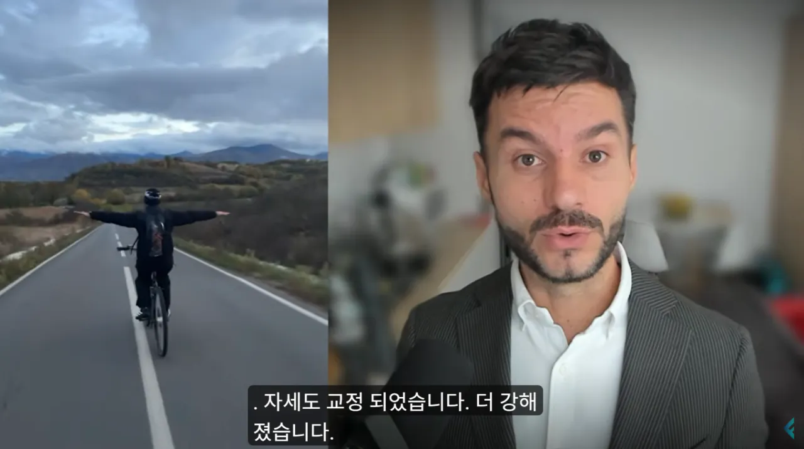
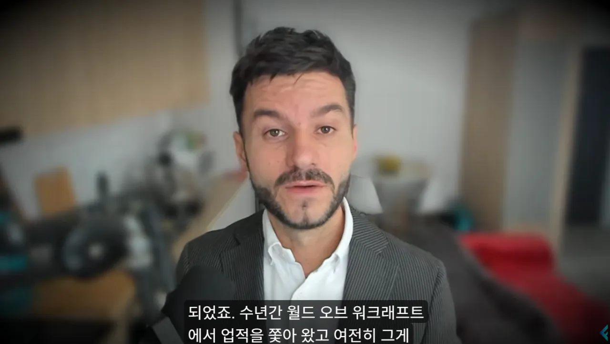
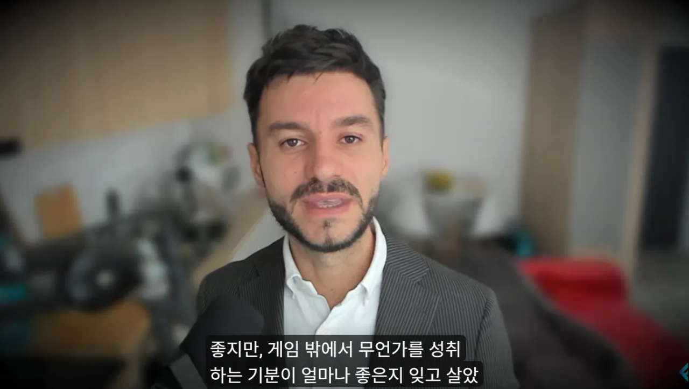

오른쪽이 와우 프로게이머 시절 왼쪽이 와우 끊은지 3년된 현재 ㅇㅇ
와우 끊고 여자친구 사귀고 결혼도 하고 직업도 생겻다고함





오른쪽이 와우 프로게이머 시절 왼쪽이 와우 끊은지 3년된 현재 ㅇㅇ
와우 끊고 여자친구 사귀고 결혼도 하고 직업도 생겻다고함
책읽는게 취미인사람이 있냐 ㄷ 난 본적이없다
있다면 있겠지만 나는 본적이없을정도로 마이너한 취미아닐까
나도 와우를 거의 오베때부터 지금까지 쭈욱 해왔었는데 드디어 끊었음
그 유명한 '생활이 없는 자'는 이미 죽었다그러네 ㅠㅠ
하지만 이제 날탈 못타고 점프입던 못하고 레이드 못돌쥬?
와우는 끊는게 맞다
맨날 일퀘에 광캐고 골팟가려고 하면 개빡세고 어휴
그냥 유튜브나 보는게 낫지
물론 요즘엔 옛날같진 않겠지만 닷씨는 안하고 싶음
미국인들은 체질적으로 근육이 잘붙는 체질이라 부럽다
쟤들은 스테로이드 딱히 의존 안해도 잘붙는데 더 잘 붙으라고 스테로이드 쓰는거잖음
동양인들은 태생적으로 근육 붙이기 어렵다더라
아무튼 그럼 반박 ㄴㄴ
와우 숙제 존나 많다. 레이드 안가고 5인 던전만 가도 한판에 20~30분임. 중간에 나가지도 못함.
집에서 책을 읽는 취미는 취미가 아닌건가?